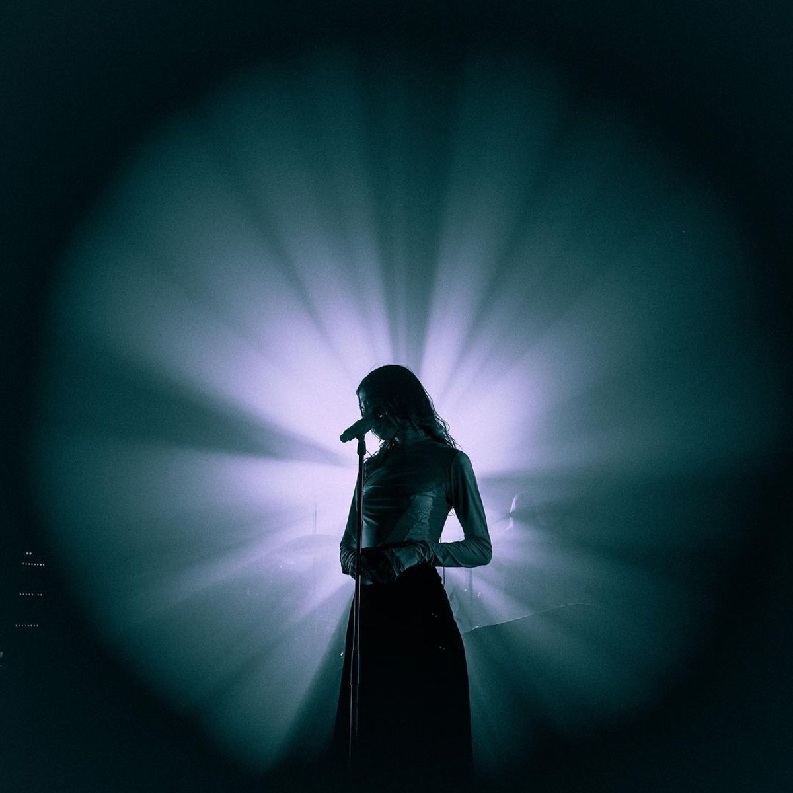
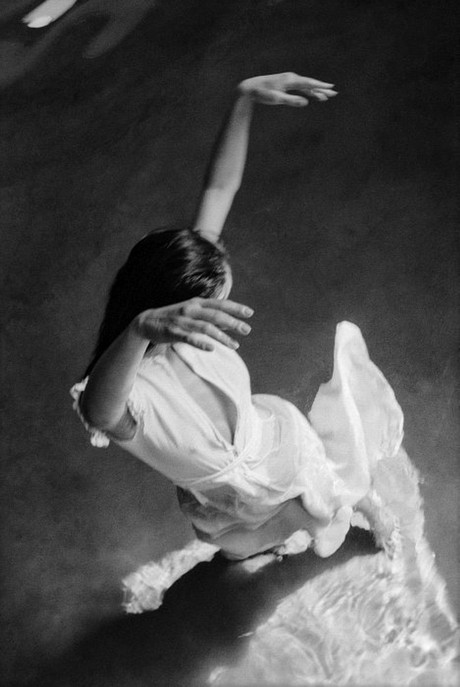

Choreography
Editorial theatricality with sacred multiplicity.

Performance portfolio
The page replaces generic portfolio tiles with a rhythm of halo, fabric, distance, and sudden proximity.
Choreography
Editorial theatricality with sacred multiplicity.

Frontal control
The body reads as a symbol before it reads as a person.

Gesture
White fabric, shadow, and dramatic release.

Stage logic
Performance imagery is strongest when the composition feels ritualized. Symmetry, backlight, and a single dominant shape do more than decorative motion ever will.